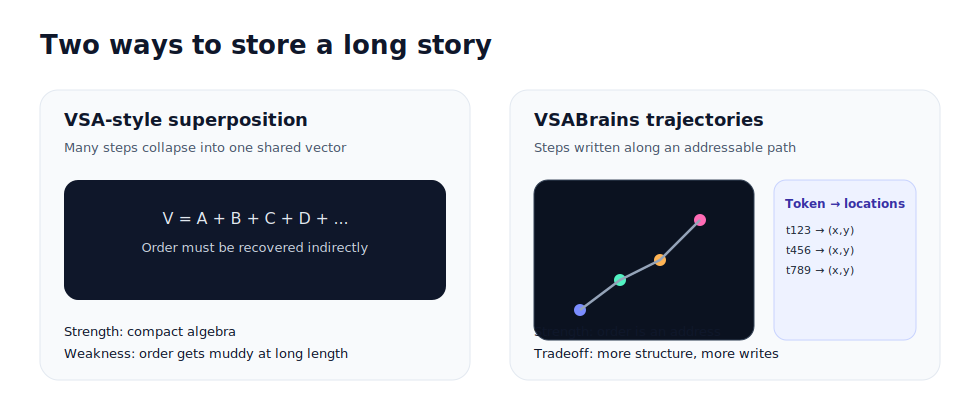

VSA vs VSABrains
VSABrains is not “anti-VSA.” It is a response to a specific failure mode we observed when using holographic superposition to represent long narratives: order becomes muddy. This page explains the tradeoff plainly and shows where VSA ideas still exist in the system.
The core difference: superposition vs address
Classic Vector Symbolic Architectures (VSA) represent many items in a single vector by superposing them. This is elegant and algebraic, but under long sequences it tends to blur order. VSABrains chooses a different encoding: order as address. Steps are written along a trajectory in a discrete map, so “when” is stored as “where.”
What VSABrains keeps from VSA
- Symbolic tokens: events become stable token IDs.
- Binding by composition: a step token is a deterministic hash of role tokens.
- Distributed evidence: heavy-hitters retain multiple candidates per location.
In short: we still compose symbols, but we do not rely on dense holographic superposition to carry timeline structure.
Why the discrete choice helps
What this does not claim
- It does not claim holographic memory or perfect unbinding from a single endpoint.
- It does not claim lower ingestion cost than a simple list (it often costs more).
- It does claim that, at scale, indexed localization + checkpoints can reduce query cost.
See Experiment 4 for consensus under noise, and Experiment 5 for scaling behavior on larger histories.
One-sentence summary
VSA compresses by superposing content into a shared space; VSABrains compresses by indexing trajectories in addressable space. The first is algebraically beautiful; the second is operationally auditable.